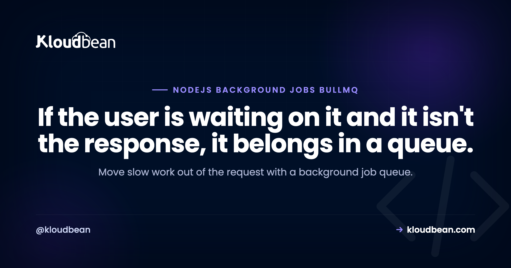

Background Jobs in Node.js with BullMQ and Redis: A Practical Guide

The moment your Node app has to send an email, resize an image, generate a report, or call a slow third-party API, you hit a fork in the road. Do it inside the request and the user waits (and your event loop is tied up), or hand it to a background job and respond right away. This guide is the practical version of the second option: BullMQ, a Redis-backed queue that's become the default for background work in Node. We'll cover the producer, the worker, retries, scheduled jobs, and the part tutorials skip, running it properly in production.
Put slow work on a queue instead of doing it in the request. BullMQ is a Redis-backed job queue for Node: your API (the producer) adds a job, and a separate worker process (the consumer) handles it, with retries, concurrency, and scheduled jobs built in. The two things you need are a persistent Redis instance and a long-running worker process, which is exactly why serverless functions aren't a good home for durable background jobs.
Why you need background jobs
Node runs your JavaScript on a single main thread. When a request handler does something slow inline, generating a PDF, waiting on an email provider, processing an upload, that request holds the connection open and can starve the event loop for everyone else. Users see spinners, requests hit gateway timeouts, and under load the whole app feels sluggish. The fix is old and reliable: accept the request, drop the slow task onto a queue, return immediately, and let a worker do the heavy lifting out of band. The user gets a fast response; the work still happens.
How BullMQ works
BullMQ has three pieces: a producer that adds jobs to a named queue, Redis that stores the queue durably, and a worker that pulls jobs off and processes them. Redis is the backbone, it's what makes jobs survive a restart and lets multiple workers share the load.
Setting up the queue (producer)
Install bullmq and ioredis, then create a queue backed by your Redis connection. Read the connection string from an environment variable, never hardcode it:
// queue.js: the producer, imported by your API
import { Queue } from "bullmq";
import IORedis from "ioredis";
// BullMQ requires maxRetriesPerRequest: null on the connection
const connection = new IORedis(process.env.REDIS_URL, {
maxRetriesPerRequest: null,
});
export const emailQueue = new Queue("email", { connection });Now add a job from a route handler and return immediately, the user doesn't wait for the email to send:
app.post("/signup", async (req, res) => {
const user = await createUser(req.body);
// hand off the slow part
await emailQueue.add("welcome", { userId: user.id }, {
attempts: 3,
backoff: { type: "exponential", delay: 1000 },
});
res.status(201).json({ id: user.id }); // fast response
});Processing jobs (the worker)
The worker is a separate long-running process. It connects to the same Redis, pulls jobs, and runs your handler. Concurrency lets one worker process several jobs at once:
// worker.js: its own process, not part of the web server
import { Worker } from "bullmq";
import IORedis from "ioredis";
const connection = new IORedis(process.env.REDIS_URL, {
maxRetriesPerRequest: null,
});
const worker = new Worker("email", async (job) => {
if (job.name === "welcome") {
await sendWelcomeEmail(job.data.userId);
}
}, { connection, concurrency: 5 });
worker.on("failed", (job, err) => {
console.error(`Job ${job?.id} failed:`, err.message);
});Keeping the worker separate from the web process is the single most important production decision here, and the next sections build on it.
Retries, backoff, and scheduled jobs
You already saw attempts and exponential backoff on the producer, that gives you automatic retries when a job throws, spaced out so a flaky email provider gets a breather instead of a hammering. BullMQ also does delayed and repeatable jobs, so you can replace a lot of cron with the same system:
// Run every day at 9am (cron syntax)
await emailQueue.add("daily-digest", {}, {
repeat: { pattern: "0 9 * * *" },
});
// Or run once, 30 seconds from now
await emailQueue.add("reminder", { id: 42 }, { delay: 30000 });Failed jobs stay in a failed set you can inspect and retry, which beats losing work silently. That durability is the whole reason to use a real queue instead of setTimeout.
Run the worker as its own process
In production you run two processes: the web server and the worker. Don't cram the worker into the web process, a heavy job would compete with request handling for the same event loop, which is the exact problem you're trying to solve. PM2 makes running both clean:
// ecosystem.config.js
module.exports = {
apps: [
{ name: "web", script: "dist/server.js" },
{ name: "worker", script: "dist/worker.js", instances: 1 },
],
};Scale workers independently of web traffic: if jobs pile up, add worker instances without touching the web tier. That separation is a big part of why a queue scales gracefully.
Why this needs a persistent Redis and worker
Two hard requirements fall out of the design. You need Redis running continuously (it holds the jobs), and you need a worker process that stays alive to consume them. This is precisely where request-driven serverless platforms struggle: there's no durable, always-on worker, so people end up bolting on external queue services to fill the gap. If background jobs are core to your app, running on infrastructure that gives you a persistent process and a managed Redis in the first place is far simpler. We dug into that tradeoff in Vercel for Node.js backends.
How this fits on Kloudbean
This is a case where the hosting model genuinely matters. On Kloudbean you launch a managed Redis instance in a few clicks (with backups), and it sits in the same dashboard as your app, right next to it, so your queue connection is a supplied REDIS_URL over an internal link, locked to your app server's IP, rather than a public endpoint. Your worker runs alongside the web app under PM2, both always-on, so jobs are consumed continuously. It's the persistent-process, managed-Redis setup that BullMQ wants, without you assembling it from separate providers.

Related reading
Redis is the engine here, so start with managed Redis hosting, and if you're replacing scheduled tasks, see run a cron job without SSH. Keep your connection config clean with environment variables done right, run both processes well with the PM2 process manager guide, and place the whole app with where to deploy a Node.js app.
Give BullMQ the Redis and worker it wants.
Launch managed Redis in the same dashboard as your always-on Node app, run your worker alongside the web process under PM2, and connect over an internal link locked to your app server's IP, on flat pricing from $8/mo. Start at kloudbean.com.
Managed Redis · Always-on worker under PM2 · GitHub deploys · Flat from $8/mo
FAQ
What is BullMQ and why use it?
BullMQ is a Redis-backed job queue for Node.js. You use it to move slow work (emails, image processing, reports, webhooks) out of the request so users get a fast response and your event loop stays free. It adds retries, concurrency, delayed and repeatable jobs, and a failed-job set, all backed by Redis so jobs survive restarts.
Do I need Redis to run background jobs in Node?
For BullMQ, yes, Redis is its storage layer and is what makes jobs durable and shareable across workers. There are other approaches (a database-backed queue, for instance), but the Redis-backed model is the common, well-supported one in Node. A managed Redis instance keeps you from operating it yourself.
How do I run a BullMQ worker in production?
Run it as its own long-running process, separate from the web server, so heavy jobs don't compete with request handling. A process manager like PM2 can run the web app and the worker together and keep both alive. Scale worker instances independently when jobs back up.
How do retries work in BullMQ?
Set attempts and a backoff strategy when you add a job. If the handler throws, BullMQ retries up to that many times, spacing attempts out with (for example) exponential backoff so a flaky dependency isn't hammered. Jobs that exhaust their attempts land in a failed set you can inspect and retry.
Can I run background jobs on serverless?
Not durably, without help. Serverless functions are request-scoped and can be torn down after responding, so there's no always-on worker to process a queue. Teams usually add an external queue or job service to compensate. If jobs are central to your app, a persistent worker process on always-on infrastructure is simpler and cheaper to reason about.
Should I use BullMQ or cron for scheduled tasks?
BullMQ can do both one-off background jobs and repeatable scheduled jobs (with cron syntax), so if you already run a queue, repeatable jobs keep everything in one system with retries and visibility. A plain system cron is fine for simple, standalone scripts. For app-level scheduled work that needs retries and logging, the queue is usually the better home.